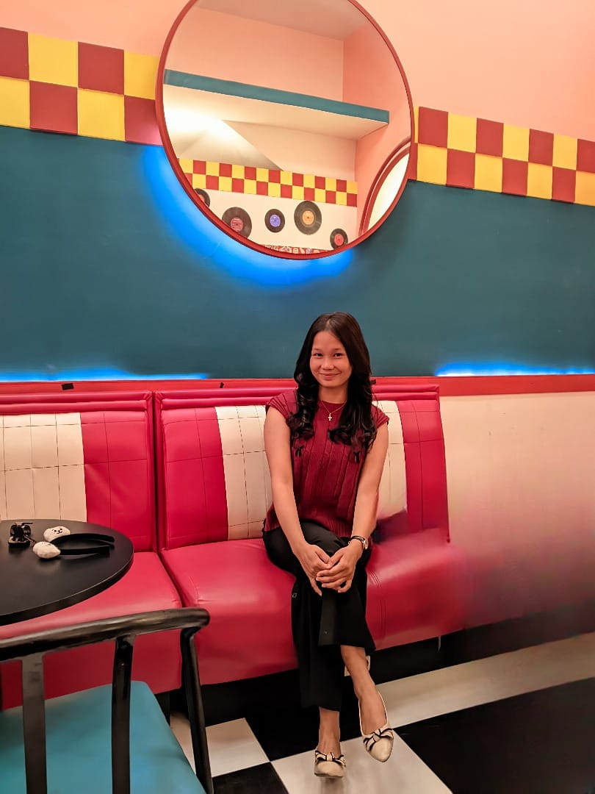
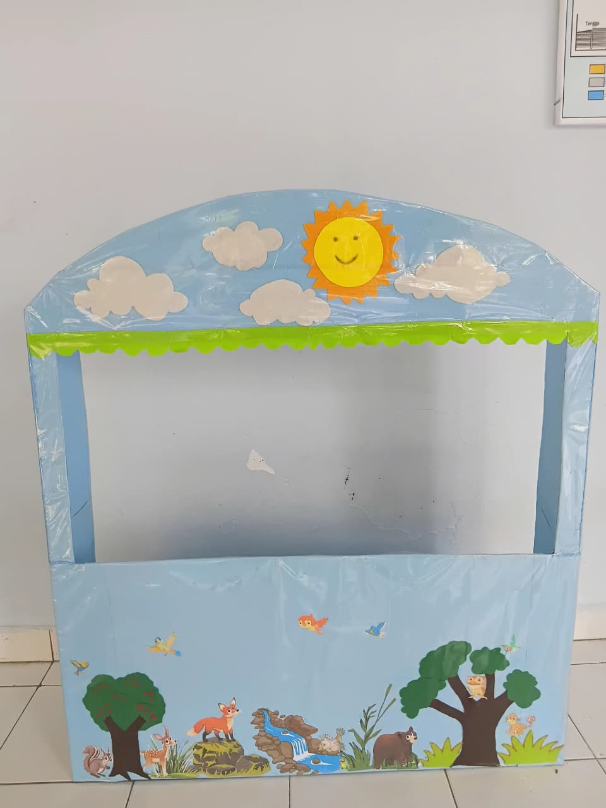
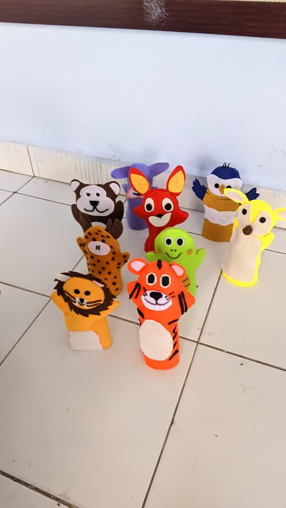
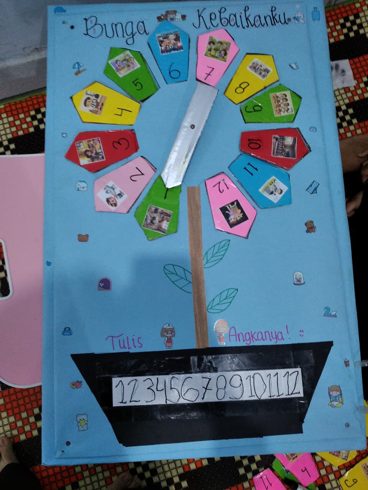
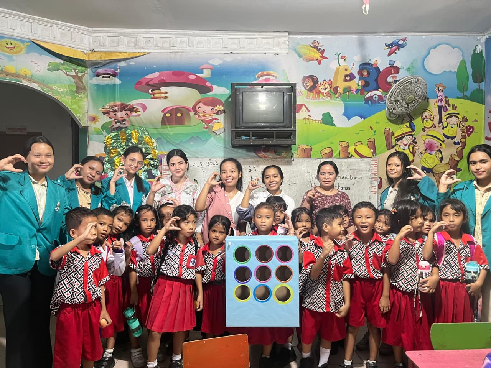

Microsoft Word
Menyusun laporan, makalah, dan dokumen pembelajaran.
Selamat datang di portofolio saya. Di sini saya berbagi perjalanan belajar, kemampuan, pengalaman, dan berbagai karya kreatif yang saya buat, khususnya dalam dunia pendidikan anak usia dini.

Setiap ide memiliki kesempatan untuk tumbuh menjadi karya yang bermakna.
Perjalanan belajar dan berkaryaPerkenalkan, saya Intan Priyani Nainggolan, seorang mahasiswa yang senang belajar, mencoba hal baru, dan mengembangkan kreativitas. Saya tertarik pada dunia pendidikan anak usia dini serta pembuatan media pembelajaran yang menarik, kreatif, dan menyenangkan bagi anak.
Melalui portofolio ini, saya mendokumentasikan hasil karya dan pengalaman sebagai bagian dari proses mengembangkan kemampuan dan pengetahuan.
Beberapa keterampilan yang mendukung proses belajar dan pembuatan karya saya.
Menyusun laporan, makalah, dan dokumen pembelajaran.
Membuat presentasi yang menarik dan terstruktur.
Mendesain poster, bahan visual, dan media pembelajaran.
Mengembangkan ide, membuat alat peraga, dan bekerja sama.
Berbagai media pembelajaran yang dirancang untuk mendukung kegiatan bermain dan belajar anak usia dini.

Panggung cerita dengan dekorasi alam yang dapat digunakan untuk kegiatan bercerita, mengembangkan imajinasi, dan menarik perhatian anak.

Boneka jari berbentuk berbagai hewan untuk mengenalkan nama hewan, merangsang bahasa, dan membuat kegiatan bercerita lebih interaktif.

Media berbentuk bunga dengan angka 1–12 yang membantu anak mengenal angka melalui kegiatan visual dan aktivitas belajar yang menyenangkan.

Dokumentasi pengalaman kegiatan pembelajaran bersama anak-anak menggunakan media kreatif sebagai bagian dari proses belajar dan praktik pendidikan.
Saya percaya bahwa setiap pengalaman dapat menjadi kesempatan untuk bertumbuh.
Terus meningkatkan kreativitas, keterampilan digital, komunikasi, dan pengetahuan di bidang pendidikan anak usia dini.
Mengembangkan media pembelajaran yang kreatif, menarik, dan bermanfaat untuk mendukung pengalaman belajar anak.
Saya senang dapat berbagi perjalanan dan hasil karya melalui portofolio ini. Mari bertukar ide, pengalaman, dan inspirasi.
Kirim Email ↗